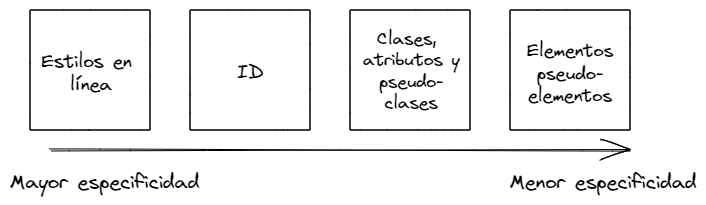

Este parrafo tiene la especificidad en linea y por lo tanto se tiene que pintar de azul
Este parrafo tine la especificidad del id por lo cual se tiene que pintar de rojo
Este parrafo tiene la especificidad del atributo por lo cual se tiene que pintar de cafe
Este parrafo tiene la especificidad de la clase por lo cual se tiene que pintar de verde
Este parrafo tiene la especificidad de un elemento por lo cual se tiene que pintar de rosa
Este parrafo tiene la regla de display block (ocupa todo el espacio del ancho posible de la etiqueta padre, en este caso "main")
Este parrafo tiene la regla de display inline (ocupa solo el espacio definido por su contenido de la etiqueta "p")
